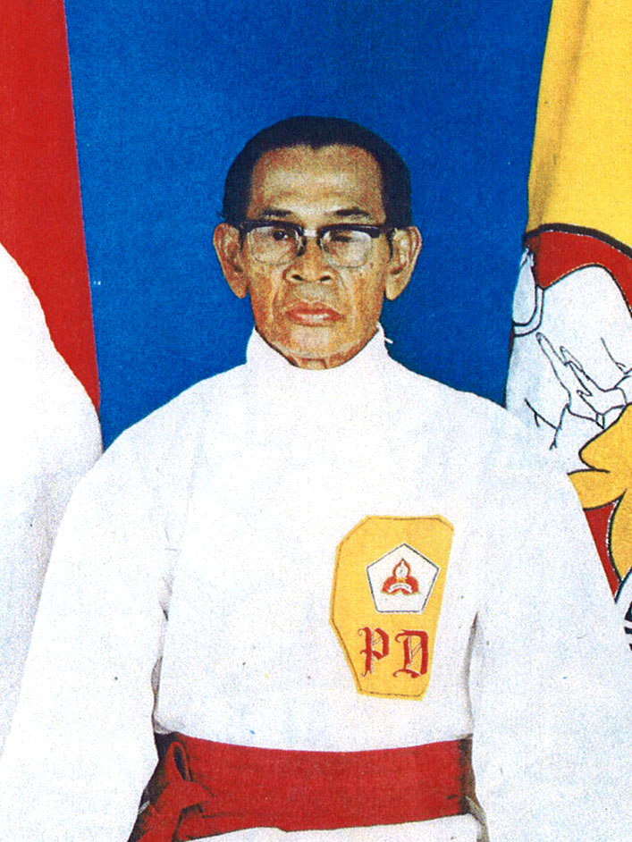

Sejarah Kelatnas Indonesia Perisai Diri
R. M. Soebandiman Dirdjoatmodjo lahir di Yogyakarta pada tanggal 8 Januari 1913 di lingkungan pura Pakualaman. Dia adalah putra pertama dari R.M. Pakoe Soedirdjo, buyut dari Sri Paduka Paku Alam II. Sejak berusia 9 tahun dia telah dapat menguasai ilmu pencak silat yang ada di lingkungan keraton sehingga mendapat kepercayaan untuk melatih teman-temannya di lingkungan Pakualaman. Di samping pencak silat dia juga belajar menari di istana Pakualaman sehingga berteman dengan Wasi dan Bagong Kussudiardja. R.M. Soebandiman Dirdjoatmodjo yang pada masa kecilnya dipanggil dengan nama Soebandiman atau Bandiman oleh teman-temannya ini, merasa belum puas dengan ilmu silat yang telah didapatkannya di lingkungan istana Pakualaman itu. Karena ingin meningkatkan kemampuan ilmu silatnya, setamat HIK (Hollands Inlandsche Kweekschool) atau sekolah pendidikan guru, dia meninggalkan Yogyakarta untuk merantau tanpa membawa bekal apapun dengan berjalan kaki.
Tempat yang dikunjunginya pertama adalah Jombang, Jawa Timur. Di sana dia belajar silat pada K.H. Hasan Basri, sedangkan pengetahuan agama dan lainnya diperoleh dari Pondok Pesantren Tebuireng. Di samping belajar, dia juga bekerja di Pabrik Gula Peterongan untuk membiayai keperluan hidupnya. Setelah menjalani gemblengan keras dengan lancar dan dirasa cukup, dia kembali ke barat. Sampai di Solo dia belajar silat pada Sayid Sahab. Dia juga belajar kanuragan pada kakeknya, Ki Jogosurasmo. Dia masih belum merasa puas untuk menambah ilmu silatnya. Tujuan berikutnya adalah Semarang, di sini dia belajar silat pada Soegito dari aliran Setia Saudara. Dilanjutkan dengan mempelajari ilmu kanuragan di Pondok Randu Gunting Semarang. Rasa keingintahuan yang besar pada ilmu beladiri menjadikan R.M. Soebandiman Dirdjoatmodjo masih belum merasa puas dengan apa yang telah dia miliki. Dari sana dia menuju Cirebon setelah singgah terlebih dahulu di Kuningan. Di sini dia belajar lagi ilmu silat dan kanuragan dengan tidak bosan-bosannya selalu menimba ilmu dari berbagai guru. Selain itu dia juga belajar silat Minangkabau dan silat Aceh.
Tekadnya untuk menggabungkan dan mengolah berbagai ilmu yang dipelajarinya membuat dia tidak bosan-bosan menimba ilmu. Berpindah guru baginya berarti mempelajari hal yang baru dan menambah ilmu yang dirasakannya kurang. Dia yakin, bila segala sesuatu dikerjakan dengan baik dan didasari niat yang baik, maka Tuhan akan menuntun untuk mencapai cita-citanya. Dia pun mulai meramu ilmu silat sendiri. R.M. Soebandiman Dirdjoatmodjo lalu menetap di Parakan dan membuka perguruan silat dengan nama Eka Kalbu, yang berarti satu hati. Di tengah kesibukan melatih, dia bertemu dengan seorang pendekar Tionghoa yang beraliran beladiri Siauw Liem Sie (Shaolinshi), Yap Kie San namanya. Yap Kie San adalah salah seorang cucu murid Louw Djing Tie melalui Hoo Tik Tjay alias Suthur. Menurut catatan sejarah, Louw Djing Tie merupakan seorang pendekar legendaris dalam dunia persilatan, baik di Tiongkok maupun di Indonesia, dan salah satu tokoh utama pembawa beladiri kungfu dari Tiongkok ke Indonesia. Dalam dunia persilatan, Louw Djing Tie dijuluki sebagai Si Garuda Emas dari Siauw Liem Pay. Saat ini murid-murid penerus Louw Djing Tie di Indonesia meneruskan perguruan kungfu Garuda Emas.
R.M. Soebandiman Dirdjoatmodjo yang untuk menuntut suatu ilmu tidak memandang usia dan suku bangsa lalu mempelajari ilmu beladiri yang berasal dari biara Siauw Liem (Shaolin) ini dari Yap Kie San selama 14 tahun. Dia diterima sebagai murid bukan dengan cara biasa tetapi melalui pertarungan persahabatan dengan murid Yap Kie San. Melihat bakat R.M. Soebandiman Dirdjoatmodjo, Yap Kie San tergerak hatinya untuk menerimanya sebagai murid. Berbagai cobaan dan gemblengan dia jalani dengan tekun sampai akhirnya berhasil mencapai puncak latihan ilmu silat dari Yap Kie San. Murid Yap Kie San yang sanggup bertahan hanya enam orang, di antaranya ada dua orang yang bukan orang Tionghoa, yaitu R.M. Soebandiman Dirdjoatmodjo dan R. Brotosoetarjo yang di kemudian hari mendirikan perguruan silat Bima (Budaya Indonesia Mataram). Dengan bekal yang diperoleh selama merantau dan digabung dengan ilmu beladiri Siauw Liem Sie yang diterima dari Yap Kie San, R.M. Soebandiman Dirdjoatmodjo mulai merumuskan ilmu yang telah dikuasainya itu.
Setelah puas merantau, dia kembali ke tanah kelahirannya, Yogyakarta. Ki Hajar Dewantara yang masih pakdenya, meminta R.M. Soebandiman Dirdjoatmodjo mengajar silat di lingkungan Perguruan Taman Siswa di Wirogunan[5]. Di tengah kesibukannya mengajar silat di Taman Siswa, R.M. Soebandiman Dirdjoatmodjo mendapatkan pekerjaan sebagai Magazijn Meester di Pabrik Gula Pleret. Pada tahun 1947 di Yogyakarta, R.M. Soebandiman Dirdjoatmodjo diangkat menjadi Pegawai Negeri pada Departemen Pendidikan dan Kebudayaan, Seksi Pencak Silat, yang dikepalai oleh Mochammad Djoemali. Berdasarkan misi yang diembannya untuk mengembangkan pencak silat, R.M. Soebandiman Dirdjoatmodjo membuka kursus silat melalui dinas untuk umum. Dia juga diminta untuk mengajar di Himpunan Siswa Budaya, sebuah unit kegiatan mahasiswa UGM (Universitas Gadjah Mada). Murid-muridnya adalah para mahasiswa UGM pada awal-awal berdirinya kampus tersebut. R.M. Soebandiman Dirdjoatmodjo juga membuka kursus silat di kantornya. Beberapa murid R.M. Soebandiman Dirdjoatmodjo saat itu di antaranya adalah Ir. Dalmono, Prof. Dr. Suyono Hadi dan R.M. Bambang Moediono Probokusumo yang di lingkungan keluarga silat Perisai Diri akrab dipanggil Mas Wuk.
Tahun 1954 R.M. Soebandiman Dirdjoatmodjo diperbantukan ke Kantor Kebudayaan Provinsi Jawa Timur, Urusan Pencak Silat. Murid-muridnya di Yogyakarta, baik yang berlatih di UGM maupun di luar UGM, bergabung menjadi satu dalam wadah HPPSI (Himpunan Penggemar Pencak Silat Indonesia) yang diketuai oleh Ir. Dalmono. Tahun 1955 dia resmi pindah dinas ke Kota Surabaya. Dengan tugas yang sama, yakni mengembangkan dan menyebarluaskan pencak silat sebagai budaya bangsa Indonesia, R.M. Soebandiman Dirdjoatmodjo membuka kursus silat yang diadakan di Kantor Kebudayaan Provinsi Jawa Timur, Surabaya. Dengan dibantu oleh Imam Ramelan, dia mendirikan kursus silat PERISAI DIRI pada tanggal 2 Juli 1955. Para muridnya di Yogyakarta pun kemudian menyesuaikan diri menamakan himpunan mereka sebagai silat Perisai Diri. Di sisi lain, murid-murid perguruan silat Eka Kalbu yang pernah didirikan oleh R.M. Soebandiman Dirdjoatmodjo masih berhubungan dengan dia. Mereka tersebar di kawasan Banyumas, Purworejo dan Yogyakarta. Hanya saja perguruan ini kemudian memang tidak berkembang, namun melebur dengan sendirinya ke silat Perisai Diri, sama seperti HPPSI di Yogyakarta. Satu guru menjadikan peleburan perguruan ini menjadi mudah. Pengalaman yang diperoleh selama merantau dan ilmu beladiri Siauw Liem Sie yang dikuasainya kemudian dicurahkannya dalam bentuk teknik yang sesuai dengan kebutuhan dan kemampuan anatomi tubuh manusia, tanpa ada unsur memperkosa gerak. Semuanya berjalan secara alami dan dapat dibuktikan secara ilmiah. Dengan motto "Pandai Silat Tanpa Cedera", silat Perisai Diri diterima oleh berbagai lapisan masyarakat untuk dipelajari sebagai ilmu beladiri.
Pada tahun 1969, murid R.M. Soebandiman Dirdjoatmodjo, Dr. Suparjono, S.H., M.Si., menjadi staf Bidang Musyawarah PB PON VII di Surabaya. Dengan inspirasi dari AD/ART organisasi-organisasi di KONI Pusat yang sudah ada, Suparjono bersama Bambang Moediono Probokusumo, Totok Sumantoro, Mondo Satrio dan anggota Dewan Pendekar lainnya pada tahun 1970 menyusun AD/ART Perisai Diri dan nama lengkap organisasi silat Perisai Diri disetujui menjadi Keluarga Silat Nasional Indonesia PERISAI DIRI yang disingkat Kelatnas Indonesia PERISAI DIRI[1]. Dimusyawarahkan juga mengenai pakaian seragam silat Perisai Diri yang baku, yang mana sebelumnya berwarna hitam dirubah menjadi putih dengan atribut tingkatan yang berubah beberapa kali hingga terakhir seperti yang dipakai saat ini. Lambang Kelatnas Indonesia Perisai Diri juga dibuat dari hasil usulan beberapa murid R.M. Soebandiman Dirdjoatmodjo, yaitu usulan gambar dari Suparjono, Both Sudargo dan Bambang Priyokuncoro, yang kemudian usulan dari Suparjono yang terpilih, kemudian disempurnakan dan dilengkapi oleh R.M. Soebandiman Dirdjoatmodjo.
Pada tahun 1982, R.M. Soebandiman Dirdjoatmodjo mengangkat 23 orang muridnya menjadi Pendekar. Para Pendekar yang diangkat langsung oleh RM Soebandiman Dirdjoatmodjo ini disebut Pendekar Historis. Pendekar Historis yang berjumlah 23 orang tersebut adalah:
- Mat Kusen, dari Surabaya.
- Dr. Suparjono, S.H., M.Si., dari Surabaya.
- Drs. Noerhasdijanto, S.H., dari Surabaya.
- Hari Soejanto, dari Surabaya.
- F.X. Supi'i, dari Surabaya.
- Ir. Nanang Soemindarto, dari Surabaya.
- Prof. Dr. dr. Hari K. Lasmono, M.S., dari Surabaya.
- Drs. Siaman, dari Surabaya.
- Prof. Dr. M. Hidajat, Sp.O.T., dari Surabaya.
- Drs. I Made Suwetja, M.B.A., dari Denpasar.
- Arnowo Adji, dari Tangerang.
- Yahya Buari, dari Lamongan.
- Bambang Soekotjo Maxnoll, dari Cimahi.
- Tonny S. Kohartono, dari Surabaya.
- Mondo Satrio Hadi Prakoso, dari Surabaya.
- Koesnadi, dari Surabaya.
- Letkol Soegiarto Mertoprawiro, dari Serang.
- Totok Soemantoro, B.Sc., dari Klaten.
- Moeljono, dari Nganjuk.
- Wardjiono, dari Jakarta.
- Gunawan Parikesit, dari Semarang.
- I Gusti Ngurah Dilla, dari Surabaya.
- Ruddy J. Kapojos, dari Surabaya.
Tanggal 9 Mei 1983, R.M. Soebandiman Dirdjoatmodjo berpulang menghadap Sang Pencipta[6]. Tanggung jawab untuk melanjutkan teknik dan pelatihan silat Perisai Diri beralih kepada para murid-muridnya yang kini telah menyebar ke seluruh pelosok tanah air dan beberapa negara di Eropa, Amerika dan Australia. Dengan di bawah koordinasi Dr. Ir. Dwi Soetjipto, M.M., sebagai Ketua Umum Pengurus Pusat, saat ini Kelatnas Indonesia Perisai Diri memiliki cabang hampir di setiap provinsi di Indonesia serta memiliki komisariat di 10 negara lain. Untuk menghargai jasanya, pada tahun 1986 pemerintah Republik Indonesia menganugerahkan gelar Pendekar Purna Utama bagi R.M. Soebandiman Dirdjoatmodjo.
Di Australia, Kelatnas Indonesia Perisai Diri mulai dikembangkan di Brisbane pada tahun 1979 oleh Dadan Muharam, seorang pelatih silat Perisai Diri dari Bandung. Kelatnas Indonesia Perisai Diri berkembang pesat di Australia dengan cabang di berbagai daerah, di antaranya yaitu di Tarragindi, Kuraby, Logan, Ashmore, Burleigh Heads, Springbrook, Maleny, Nambour, Noosaville, Yandina, Gympie, Townsville, Coffs Harbour, Newcastle, Moruya Heads, Melbourne, Adelaide, Perth, dsb.
Kelatnas Indonesia Perisai Diri juga dikembangkan di Belanda oleh Ronny Tjong A-Hung sejak tahun 1979. Saat ini Kelatnas Indonesia Perisai Diri di Belanda telah berkembang dengan tempat latihan di Amsterdam, Hilversum, Maarssen, Nieuwegein, Utrecht, dsb.
Pada tahun 1983, salah satu pelatih silat Perisai Diri yaitu Otto Soeharjono M.S. pindah tugas ke London, Inggris. Dia mendirikan Kelatnas Indonesia Perisai Diri Komisariat Inggris Raya dan menjadi pelopor PSF UK (Pencak Silat Federation of United Kingdom).
Both Sudargo, salah satu pendekar silat Perisai Diri yang pernah menjabat sebagai Pengurus Bidang Pembinaan Pencak Silat Olahraga PB IPSI, pada tahun 1996 ditugaskan oleh pemerintah sebagai Atase Perhubungan di Kedutaan Besar RI di Tokyo, Jepang. Di negeri yang dikenal sebagai pusat beladiri dunia ini, dia berhasil mengembangkan pencak silat dengan mendirikan JAPSA (Japan Pencak Silat Association). Dengan dibantu oleh Soesilo Soedarmadji, dia mengembangkan Kelatnas Indonesia Perisai Diri Komisariat Jepang.
Pada tahun 1997, Chandrasa Sedyaleksana yang sedang menjalani pendidikan di Technical University of Berlin dan kemudian bekerja di Cologne membuka kembali Kelatnas Indonesia Perisai Diri di Jerman yang sebelumnya sudah pernah dirintis oleh Mokhamad Hendayun. Kelatnas Indonesia Perisai Diri Komisariat Jerman memiliki tempat latihan di Bonn.
Pada tahun 2009, Fabien Markiewicz dengan dibantu oleh Chandrasa Sedyaleksana membuka latihan silat Perisai Diri di Audresseles, Prancis. Kemudian disusul oleh Graeme Fullarton yang pada tahun 2013 membuka latihan silat Perisai Diri di Ockelbo, Swedia. Latihan silat Perisai Diri di Swedia bergabung dengan Prancis, Swiss dan Jerman, membentuk komisariat Kelatnas Indonesia Perisai Diri 4 negara dengan Chandrasa Sedyaleksana sebagai Penanggung Jawab Teknik.
Selain itu Kelatnas Indonesia Perisai Diri juga berkembang di beberapa negara lainnya. Kelatnas Indonesia Perisai Diri telah beberapa kali menggelar even kejuaraan internasional yang dikenal dengan nama Perisai Diri International Championship (PDIC).